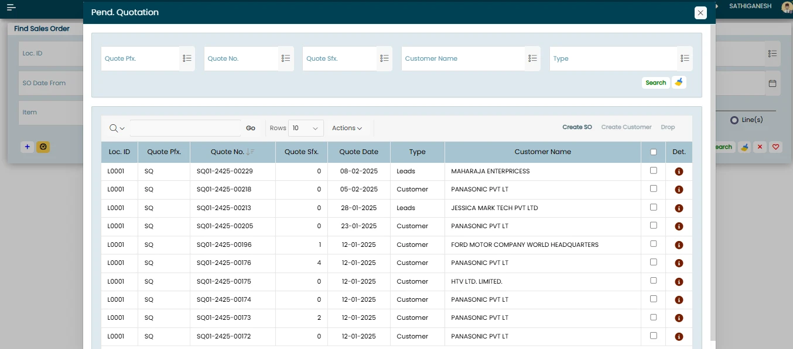
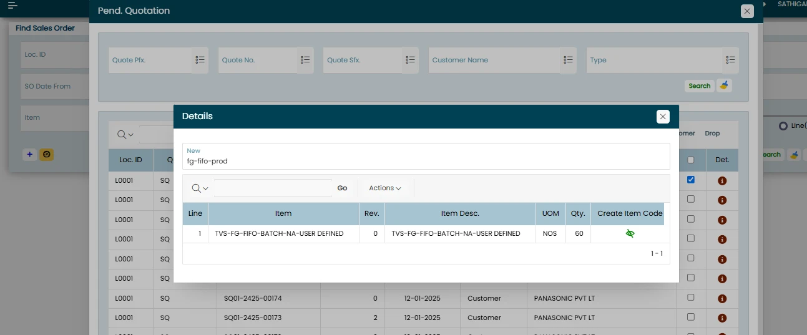
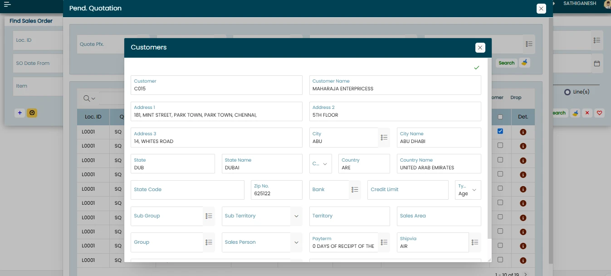
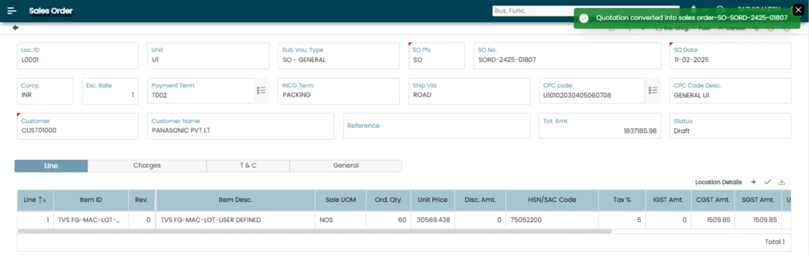

<div data-category="CRM" data-title="Pending Quotation" data-updated="December 01, 2025" data-contributors="RoadmapIT" data-breadcrumb="Home,CRM,Pending Quotation">
  <div class="page-content">
    <p>A pending quotation refers to a quote that has been created and sent to a potential customer but has not yet been accepted, rejected, or finalized. It is essentially in a waiting state, pending further action from the customer or internal approval processes.</p>
    <p>In Pending Quotation screen if it was a new item, Item code request is created. If it was a new customer. Customer was created.</p>
    <h5>Navigation path:</h5>
    <p class="fs-6">Supply chain \ Transaction \ Sales \ Sales order</p>
    
    <ul style="list-style-type: none; align-content: center">
      <li class="mouse-icon">By selecting the record, Sales Order will be created</li>
      <li class="mouse-icon">Based on the quotation types, Sales Order will be created</li>
      <li class="mouse-icon">By Clicking  Drop button to Drop the Quotation</li>
      <li class="mouse-icon">Details button <i class="bi bi-info rounded-circle text-light fs-6 mx-1" style="background-color: var(--bs-danger-text-emphasis);padding: 0px 2px;"></i> to click view the item details </li>
    </ul>
    
    <ul style="list-style-type: none; align-content: center">
      <li class="mouse-icon">Enter the Item ID.</li>
      <li class="mouse-icon">Choose the Sub Class</li>
      <li class="mouse-icon">Choose the UOM</li>
      <li class="mouse-icon">Choose the warehouse</li>
      <li class="mouse-icon">Click the Create item Code button</li>
      <li class="mouse-icon">After clicking the Create Item Code Button , Item should be Auto created in Item Master with Filled Details</li>
    </ul>
    
    <ul style="list-style-type: none; align-content: center">
      <li class="mouse-icon">Click the Create Customer Button to covert the lead into new Customer before converting the quotation into order</li>
      <li class="mouse-icon">Choose the Sub group</li>
      <li class="mouse-icon">Enter the GST Number</li>
      <li class="mouse-icon">Choose the GL Group</li>
      <li class="mouse-icon">Enter the Credits limit </li>
      <li class="mouse-icon">Click the Create Button</li>
      <li class="mouse-icon">After clicking the Create Button, Customer should be Auto created in Customer Master with Filled Details</li>
    </ul>
    
    <ul style="list-style-type: none; align-content: center">
      <li class="mouse-icon">Select the Record</li>
      <li class="mouse-icon">By Clicking Create SO Button, Sales order will be created</li>
    </ul>
    <div class="wp-callout wp-callout-info">
      <div class="wp-callout-title">
        <i class="bi bi-lightbulb-fill" style="font-size: 18px; color: #ffd903"></i>
        Note
      </div>
      <p>After creating the Sales order, the Quotation cannot be revised.</p>
    </div>
  </div>
</div>